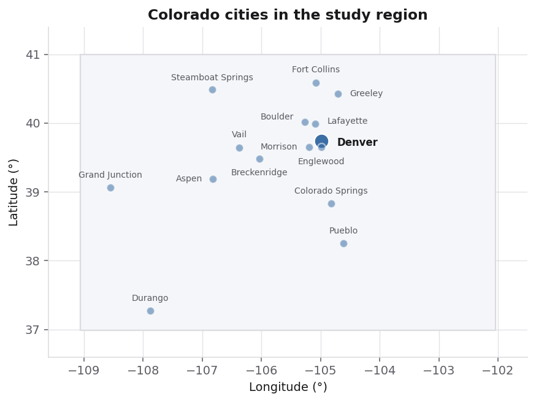

Introduction
Live electronic music in Colorado, the problem of finding it, and why it matters.
Live electronic music occupies an unusual position in the contemporary music economy. Recorded electronic music circulates almost entirely online, through streaming platforms and download stores, while the culture that produces it remains stubbornly physical and local. A record can reach a listener anywhere on earth within seconds of release, but the performance of that record happens in a specific room, on a specific night, in front of a few hundred people. Colorado is a substantial market for exactly this kind of event. Bandsintown, one of the largest live-music platforms, placed Denver among the top ten United States cities for concert ticket demand in its 2025 year-end report. The state's venues range from Red Rocks Amphitheatre, which draws international touring acts, down through mid-sized rooms such as the Ogden Theatre, Cervantes' Masterpiece Ballroom and the Bluebird Theater, to small clubs like The Black Box and Larimer Lounge that program electronic music several nights a week. In a representative week in September 2026, roughly forty events classified as electronic were listed in Denver alone, spread across nearly twenty distinct venues. The density is high, the turnover is fast, and the listings change constantly.
Finding those shows is considerably harder than the raw numbers suggest. Event information is scattered across venue calendars, promoter social media accounts, ticketing platforms, printed flyers and word of mouth, and no single source is complete. Announcement windows for club events are often short, with a lineup confirmed only two or three weeks before the date, which means a listener who checks monthly will systematically miss the smaller shows. Larger touring acts are easy to hear about precisely because they are marketed heavily, while the long tail of local and regional artists depends on an audience that already knows to look for them. Genre labels compound the problem rather than solving it: a single category such as "electronic" is applied to ambient, house, drum and bass, dubstep and hard techno alike, styles whose audiences overlap far less than the shared label implies. The result is a discovery failure that runs in both directions. A listener who would happily pay to see a particular artist may never learn that the artist performed fifteen minutes from their home. An artist who could have filled a room plays to a half-empty one because the people who would have come never heard about it.
The consequences fall unevenly, and they fall hardest on the people with the least slack. For audiences, the cost is a diminished cultural life and money spent on the shows they happened to hear about rather than the shows they would most have enjoyed. For emerging artists, the cost is more severe. Live performance is where a large share of working musicians earn their income, and for electronic artists in particular the live booking is often the primary source of both revenue and audience growth, since streaming royalties at small scales are negligible. An artist whose local audience cannot find them is an artist whose career stalls for reasons that have nothing to do with the quality of their work. Small and mid-sized venues face the same arithmetic from the other side: they operate on thin margins, a poorly attended night is a direct loss, and a room that loses money consistently closes. Promoters, who assume financial risk on each booking, absorb the volatility in between. The health of a regional music scene therefore depends in a concrete way on whether the people who would enjoy a given show can actually find out that it exists.
A great deal of effort has gone into solving the analogous problem for recorded music, and much of it has succeeded. Two decades of work on music recommendation have produced systems that can suggest a track a listener has never heard and be right often enough to sustain platforms with hundreds of millions of users. Live music discovery has not kept pace. The tools that exist largely fall into two categories, and both have the same limitation. The first alerts a listener when an artist they already follow announces a nearby date, which is useful but tautological: it can only return what the listener already knew they wanted. The second filters events by geographic radius and a coarse genre label, which returns far too much and ranks it by little more than popularity or proximity. Neither approach can tell a listener that an artist they have never heard of is playing on Thursday and that they would probably love it. The gap between what is possible for recorded music and what is available for live music remains wide.
What makes this gap interesting is that live music generates a kind of information that recorded music simply does not have. Every concert bill is a curatorial judgment: a promoter or booker decides that these particular artists belong on the same stage on the same night, in a particular order, in a particular room. Those decisions are made by people with deep knowledge of a local scene, and they encode stylistic affinities far finer than any genre vocabulary can express. Venues develop identities and programme consistently within them. Artists tour along routes that reflect where their audiences actually are. None of this is captured by the audio of a recording or by a listener's play count, and all of it is publicly visible in the historical record of who performed where and alongside whom. Whether that accumulated curatorial knowledge can be used to help people find live music they would love, and specifically whether it can be done for the Colorado electronic scene where the data is dense and the results can be checked against lived experience, is the question this project sets out to answer.

Ten Questions This Project Aims to Answer
- Which artists repeatedly appear on the same bills as one another in Colorado, and do those recurring pairings form identifiable communities within the broader electronic scene?
- Do Colorado venues have distinguishable musical identities, in the sense that the artists booked at one room differ systematically from those booked at another?
- How much of the live electronic activity in Colorado is driven by local and regional artists versus national and international touring acts?
- Does the structure of who performs with whom capture stylistic distinctions finer than the single label "electronic" — for example, separating house from drum and bass from ambient?
- Is there a seasonal pattern to live electronic events in Colorado, and does it differ between Front Range cities and mountain towns?
- Can the artists whose local following is growing fastest be distinguished from those whose following is flat, using information available before the growth becomes obvious?
- Which venues function as entry points for artists new to the Colorado market, and which tend to host artists who are already established there?
- How far in advance are electronic events announced, and does that lead time differ by venue size or by the prominence of the artist?
- Given the artists a listener already follows, can other artists they are likely to enjoy be identified from live performance history alone, without any audio or listening data?
- Do the events that sell out differ in any observable way from those that do not, beyond the popularity of the headlining artist?